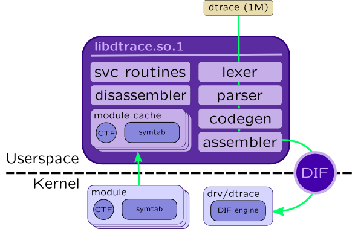

DTrace
DTrace is shipped with Solaris from version 10, no additional actions needed to install it. It also doesn't need any changes to kernel code: it relies on CTF sections, symbol tables and static tracing points that are included into Solaris Kernel binaries.
The heart of DTrace is libdtrace.so.1 library which contains compiler that translates script in D language to a DTrace Intermediate Format (DIF). That format is machine codes of simplified RISC which are interpreted by drv/dtrace driver:

DTrace primary front-end tool is dtrace(1M) which act both as compiler and consumer and uses libdtrace.so.1 facilities to do that. There are other front-ends: trapstat(1M) and lockstat(1M), but libdtrace.so.1 APIs are open, so you can create your own front end for that (i.e. for Java using JNI). We will refer to dtrace(1M) as DTrace further in a book.
DTrace tool
DTrace supports three launch modes:
-
Script is passed as command line argument:
# dtrace -n 'syscall::write:entry { trace(arg0); }' -
Script is located in separate file:
# dtrace -s syscalls.d [arguments]In that case you may pass arguments, for example user ID for traced processes or disk name for which you trace block input-output. In this case arguments will be accesible in variables$1,$2, ...$n. Note that because there is no special handling for string arguments, you may need duplicate quotes (double-quotes needed by DTrace):# dtrace -s syscalls.d '"mysqld"' -
Explicitly passing name of probe:
dtrace [-P provider] [-m module] [-f function] [-n name]
Here are some useful command line options:
-
-l-- lists all available probes. Can be filtered using options-P,-m,-for-nor usinggrep. I.e.:# dtrace -l -P io ID PROVIDER MODULE FUNCTION NAME 800 io genunix biodone done 801 io genunix biowait wait-done 802 io genunix biowait wait-start
-
-q-- enables quiet mode. By default DTrace prints probe id, its name and CPU number when probe fires.-qdisables that. -
-w-- allows destructive actions, for example system panics or breakpointing applications. That actions may be forbidden globally by setting kernel tunabledtrace_destructive_disallow. -
-o FILE-- redirects output to a file. If file already exists, it appends to it. -
-x OPTION[=VALUE]-- sets one of DTrace tunables. Here are some useful tunables:-
bufsize-- size of consumer buffer (same as-b). Note that consumer buffers are per-cpu. -
cpu-- processor on which tracing is enabled (same as-c) -
dynvarsize-- size of buffers for dynamic variables (associative arrays in particular) -
quiet-- quiet mode (same as-q) -
flowindent-- print probes in tree mode with indentation. See more in Dynamic code analysis. -
destructive-- enables destructive mode (same as-w). These options may be set inside script using pragma directive:#pragma D option bufsize=64m
-
-
-C-- call C preprocessorcpp(1)before script compilation. That allows handling C preprocessor directives such as#include,#define,#ifdefand so on. There are some extra preprocessor-related options:-
-D MACRO[=SUBSTITUTION]-- defines preprocessor macro.-Uundefines it. -
-I PATH-- adds a path to include files -
-H-- prints included files
-
-
-Aand-a-- enable anonymous tracing which is used to trace system's boot and allows early loading ofdrv/dtrace -
-c COMMANDand-p PID-- attaches tracing to a running command or starts new one
DTrace example
Let's create script test.d with following contents:
#!/usr/sbin/dtrace -qs -x dynvarsize=64m
#pragma D option flowindent
syscall::write:entry
/pid == $target/
{
printf("Written %d bytes\n", arg2);
}
Launch it with following options:
root@host# chmod +x /root/test.d root@host# /root/test.d -c "dd if=/dev/zero of=/dev/null count=1"
Q: One by one, remove options flowindent and -q from script. What changed?
Q: Calculate number of probes that are provided by fbt provider:
# dtrace -l -P fbg | wc -l
References